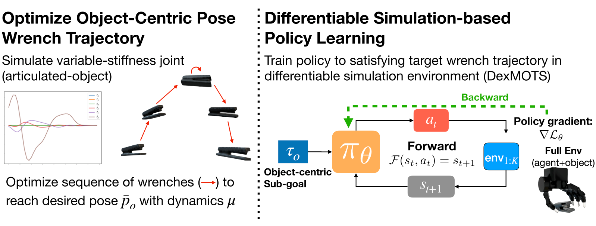

Hey! I'm Jeremy, and I'm a Machine Learning PhD student at Georgia Tech advised by Animesh Garg. I obtained my MS in Robotics at Georgia Tech under Charlie Kemp, and I have a BS from the University of Arkansas, where I worked with Yue Chen. My research interests are in deep learning applied to robotics. I am particularly interested in video understanding, visuomotor control, and robotics at scale.
|
RoCoDA: Counterfactual Data Augmentation for Data-Efficient Robot Learning from Demonstrations
Ezra Ameperosa, Jeremy A Collins, Mrinal Jain, Animesh Garg
In submission
|
|
 |
DexMOTS: Dexterous Manipulation with Differentiable Simulation
Krishnan Srinivasan, Jeremy A Collins, Eric Heiden, Ian Ng, Jeannette Bohg, Animesh Garg
International Symposium of Robotics Research (ISRR) 2024
|
|
ForceSight: Multi-Task Text-Guided Mobile Manipulation with Visual-Force Goals
Jeremy A Collins, Cody Houff, You Liang Tan, Charles C Kemp.
|
|
Visual Contact Pressure Estimation for Grippers in the Wild
Jeremy A Collins, Cody Houff, Patrick Grady, Charles C Kemp.
|
|
PressureVision++: Estimating Fingertip Pressure from Diverse RGB Images
Patrick Grady,
Jeremy A Collins,
Chengcheng Tang, Christopher D Twigg, James Hays, Charles C Kemp.
|
|
Force/Torque Sensing for Soft Grippers using an External Camera
Jeremy A Collins,
Patrick Grady, Charles C Kemp.
|
|
Visual Pressure Estimation and Control for Soft Robotic Grippers
Patrick Grady,
Jeremy A Collins,
Samarth Brahmbhatt, Christopher D Twigg, Chengcheng Tang, James
Hays, Charles C Kemp.
|
Georgia Institute of Technology
Aug. 2023 - PresentPh.D. in Machine Learning
Georgia Institute of Technology
Aug. 2021 - May 2023M.S. in Robotics
GPA: 4.00
University of Arkansas
Aug. 2017 - May 2021B.S. in Mechanical Engineering, Minor in Mathematics
GPA: 4.00


{kind=link}
{kind=link}